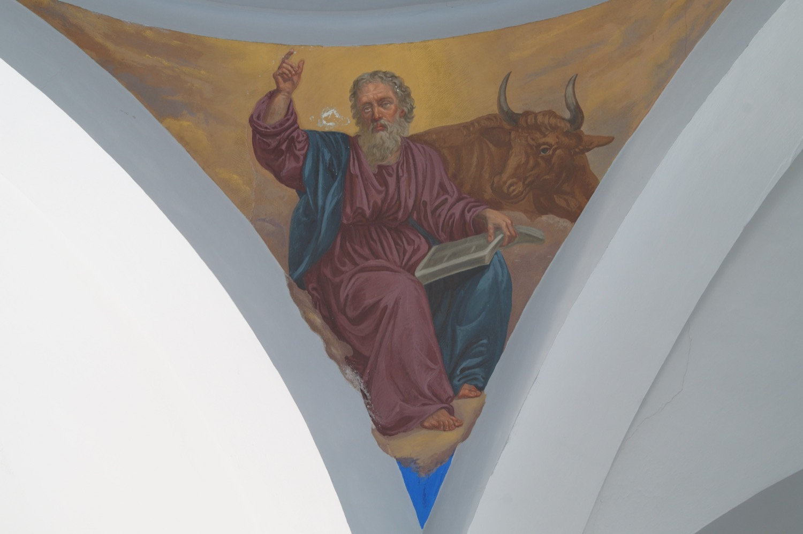

Sant Lluc era metge de professió. Tot i no ser un dels dotze apòstols, va escriure un dels Evangelis canònics i el llibre dels Fets dels Apòstols. A més, segons la llegenda, pintà els primers retrats de la Verge Maria. Acompanyà sant Pau en els seus viatges missioners a Macedònia, Cesarea i Roma, entre d’altres. Després de la mort de sant Pau, tornà a Grècia, on predicà fins a la seva mort.
En aquest fresc de l’any 1863, el pintor italo-mallorquí Francesc Parietti Rigo el representà aguantant un llibre, cosa que simbolitza el seu paper com a escriptor, i acompanyat d’un bou, que és el seu símbol en el tetramorf, la representació simbòlica dels quatre evangelistes. En el bestiari popular, el bou és signe de sacrifici, i aquest és un dels temes centrals de l’Evangeli de sant Lluc: comença parlant del sacrifici que oferí Zacaries a Déu i és també el que tracta amb més extensió l’episodi de la Passió de Crist.